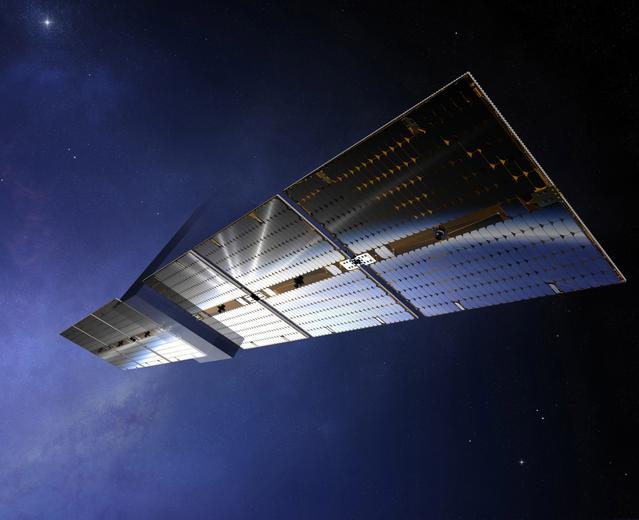

Airbus (AIR)
Airbus SE to europejski konglomerat lotniczo-obronno-kosmiczny notowany na Euronext Paris, z silną ekspozycją unijną. Działalność związana z orbitalnymi i naziemnymi centrami danych skupia się w jednostce Airbus Defence and Space (oraz spółkach zależnych Tesat-Spacecom, EHP i Airbus DS Netherlands) i jest dla całej grupy niszą marginalną. Cały segment kosmiczny (Airbus Space Systems) wygenerował w 2025 r. ok. 2 950 mln EUR przychodu, +16,2 proc. r/r, co stanowi jedynie ok. 4,0 proc. skonsolidowanych przychodów Airbus SE wynoszących 73 420 mln EUR (FY 2025, opublikowane 19 lutego 2026, 🔵). Trzon wyceny grupy to samoloty komercyjne (52 577 mln EUR, 71,6 proc. konsolidacji, 🔵) i helikoptery; segment Defence and Space odpowiada za 13 405 mln EUR (18,3 proc., 🔵). Poszczególne podzespoły omawiane poniżej (PV, optyka, chłodzenie, busy, serwisowanie) to ułamki procenta przychodów i nie są raportowane osobno - dla każdego z nich udział w sprzedaży to NIE UJAWNIONE.
W kontekscie: Fizyka orbitalna, orbity i operacje
Airbus jest jednym z trzech globalnych prime'ów kosmicznych klasy Tier-1 obok Boeinga, Lockheed Martin i Northrop Grumman, a w Europie wraz z Thales Alenia Space dominuje w produkcji platform satelitarnych. Jego portfel busów obejmuje Eurostar Neo i software-defined OneSat dla orbity GEO oraz AstroBus/Arrow dla LEO i obserwacji Ziemi, z wbudowanymi układami sterowania orientacją (AOCS/ADCS): kołami reakcyjnymi, star trackerami oraz napędem chemicznym i elektrycznym (silniki Halla). Platformy Eurostar Neo i OneSat oferują do 25 kW mocy, żywotność 15 lat i ładunek użyteczny do ok. 2 t (🟠, dane produktowe 2025); OneSat to pierwsza w pełni software-defined platforma GEO Airbusa, której debiut orbitalny przypadł na 2023 r. Dziedzictwo ponad 70 misji GEO na rodzinie Eurostar oraz heritage Astrium w AOCS to realna bariera wejścia. W segmencie ADCS Airbus jest szacowany na pozycję lidera z przychodem rzędu 620 mln USD (🟠, ReportMines 2025).
To te same kompromisy doboru orbity, które rozwija wątek Trade-off orbit: LEO vs SSO dawn-dusk vs MEO vs GEO, a ograniczenia wynoszenia gotowych modułów kontra montaż na orbicie omawia Montaż on-orbit / in-space assembly vs wynoszenie gotowych modułów, ograniczenie fairingu.
Materiały spółki
Grafiki z materiałów spółki / IR (prawa właściciela, użycie redakcyjne). Pełny rejestr:
Spolki/assets/_licencje.json.

1 | | Wizualizacja produktu Sparkwing - składane skrzydło fotowoltaiczne dla małych satelitów (Airbus Defence and Space Netherlands). Źródło: www.airbus.com; licencja: materiały spółki / IR - prawa właściciela, użycie redakcyjne.
W kontekscie: Energetyka kosmiczna i fotowoltaika orbitalna
W fotowoltaice orbitalnej Airbus dysponuje produktem Sparkwing - pierwszym komercyjnym, katalogowym ("off-the-shelf") panelem słonecznym dla małych satelitów, wytwarzanym w Leiden w Holandii. Oferta obejmuje moduły od 100 W do 2 000 W, ponad 30 wymiarów paneli i skrzydła w konfiguracji 1-3 panele, a najnowsze rozwiązania sięgają powierzchni PV ponad 30 m2 na satelitę (🟠, materiały Airbus 2024). Flagowy kontrakt to ponad 200 paneli Sparkwing dla MDA Space (2024 r.), w tym największa dotąd konfiguracja - 2 skrzydła po 5 paneli i ponad 30 m2 powierzchni PV (np. dla programu Telesat Lightspeed). Przewagą jest ponad 50 lat doświadczenia w fotowoltaice kosmicznej, deklarowana 100-procentowa skuteczność wdrożeń oraz zaprojektowanie Sparkwing pod produkcję seryjną dla konstelacji LEO. Przychód z tej niszy to NIE UJAWNIONE; szacunek ekspercki to ułamek procenta skonsolidowanych przychodów grupy.
Mechanizmy decydujące o gęstości mocy i przeliczeniu na megawaty rozwija Gęstość masowa: W/kg, masa/m2 i przeliczenie "200 MW", a ograniczenia degradacji ogniw w środowisku radiacyjnym - Degradacja PV od promieniowania: BOL vs EOL.
W kontekscie: Chłodzenie i radiacyjne odprowadzanie ciepła
W odprowadzaniu ciepła Airbus opiera się na belgijskiej spółce zależnej EHP (część Airbus DS od 2017 r.), która dostarcza heat pipes, loop heat pipes (LHP2), podsystemy szyny termicznej, rozkładane radiatory oraz Deployable Pointing Systems dla platform Eurostar Neo i OneSat; uzupełnieniem są HiPeR Flexlinks z Airbus DS Netherlands dla małych satelitów. EHP zatrudnia ponad 100 osób, ma ponad 90 patentów oraz ponad 150 000 000 godzin pracy w przestrzeni bez awarii in-orbit, a nowa fabryka liczy 10 000 m2, w tym 2 000 m2 clean roomu (🟠, EHP 2024). EHP jest wiodącym europejskim dostawcą komponentów termokontroli, a jego produkty są standardowo stosowane we wszystkich satelitach Airbusa, m.in. w MetOp-SG. Przychód tej linii to NIE UJAWNIONE; EHP jest mniejszościową spółką-córką, której wyniki nie są raportowane osobno.
Dlaczego w próżni liczy się wyłącznie promieniowanie, wyjaśnia Mechanizm: dlaczego w próżni liczy się tylko promieniowanie, a zastosowane technologie pętli i radiatorów rozwija Technologie: heat pipes, pętle, układy dwufazowe i radiatory rozkładane.
W kontekscie: Łączność: optyczne ISL, downlink i latencja
W łączności optycznej Airbus ma ponad 20 lat doświadczenia i portfel obejmujący stacje naziemne LaserPort, terminale mobilne LaserNode, terminal lotniczy/GEO UltraAir (we współpracy z TNO/VDL, program ESA ScyLight), terminal HAPS Skyline S2 (1 Gbit/s na dystansie 100 km) oraz dziedzictwo systemu przekaźnikowego SpaceDataHighway/EDRS. UltraAir ma realizować łącza z GEO na dystansie 36 000 km, docelowo z przepustowością kilku Gbit/s, z odpornością na zagłuszanie i niskim prawdopodobieństwem przechwycenia (🟠, materiały Airbus 2024). Przewagą jest fakt, że EDRS/SpaceDataHighway to jedyny operacyjny europejski system laserowych przekaźników GEO. Działalność laserowa mieści się w jednostkach Connected Intelligence oraz Airbus DS Netherlands, a jej przychód to NIE UJAWNIONE.
Roadmapy laserowych łączy międzysatelitarnych rozwija Optyczne łącza międzysatelitarne (laser ISL) i roadmapy Tbps, a kompromisy między downlinkiem RF a optycznym - Downlink do Ziemi: RF Ka/V band kontra optyczne stacje naziemne i wpływ chmur.
W kontekscie: Niezawodność, serwisowanie i cykl życia sprzętu
W obszarze serwisowania orbitalnego Airbus rozwija koncepcję pojazdu Space Tug (tankowanie, naprawy, inspekcja i usuwanie śmieci) oraz podpisał kontrakt z Astroscale na 100 płyt cumowniczych dla satelitów OneWeb (Eutelsat), współpracując szerzej w ramach ISAM (serwisowanie, montaż i wytwarzanie w przestrzeni). Działalność ta jest jednak na etapie demonstratorów i prac badawczo-rozwojowych - brak materialnych przychodów komercyjnych, a przychód z niszy to NIE UJAWNIONE. Mimo to Airbus jest jednym z nielicznych europejskich prime'ów zdolnych do integracji serwisowania orbitalnego, z dziedzictwem robotyki kosmicznej i platform autonomicznych.
Dlaczego brak napraw in-situ wymusza model robotyczny, rozwija Brak napraw in-situ a robotyczna obsługa (Northrop Grumman MEV i następcy), a napięcie między tempem prawa Moore'a a żywotnością platformy - Starzenie technologiczne (prawo Moore'a) szybsze niż żywotność platformy - problem ekonomiczny.
Pozycja rynkowa
Airbus Defence and Space należy do trzech globalnych prime'ów kosmicznych klasy Tier-1 obok Boeinga, Lockheed Martin i Northrop Grumman, a w Europie wraz z Thales Alenia Space dominuje w produkcji platform GEO/LEO oraz podsystemów satelitarnych. W 2025 r. ADS zanotował rekordowy order intake na poziomie 17,7 mld EUR (book-to-bill ok. 1,3, 🔵), w tym kontrakt na 340 satelitów OneWeb dla Eutelsat oraz kontrakt OneSat OmanSat. W niszy ADCS Airbus jest szacowany na lidera z przychodem rzędu 620 mln USD (🟠, ReportMines 2025).
Głównymi konkurentami w poszczególnych niszach są: Thales Alenia Space (platformy, ADCS, very-high-throughput satellites - bezpośredni europejski rywal), amerykańscy Lockheed Martin, Northrop Grumman i Boeing (szczególnie w programach rządowych), Maxar/MDA (LEO i serwisowanie robotyczne) oraz SpaceX, który konkuruje skalą i własną integracją pionową w komercyjnych konstelacjach LEO. Airbus tradycyjnie dominuje w GEO i programach instytucjonalnych ESA, natomiast rynek komercyjnych konstelacji LEO jest dla niego trudniejszy kosztowo.
Ryzyka
Pierwszym i najważniejszym ograniczeniem jest marginalność niszy przy ogromnej dywersyfikacji grupy. Cały Space Systems to ok. 4 proc. przychodów Airbusa (🔵, FY 2025), a poszczególne podzespoły - termiczne, PV, laserowe, serwisowe - to ułamki procenta. Inwestor kupuje przede wszystkim cykl samolotów komercyjnych i helikopterów; ekspozycja kosmiczna jest dla wyceny grupy de facto opcją bezkosztową, a nie czynnikiem napędzającym przychody. Oznacza to, że nawet szybki rozwój orbitalnych centrów danych miałby na skonsolidowane wyniki Airbusa wpływ trudny do wyodrębnienia.
Drugim ryzykiem jest restrukturyzacja i konsolidacja europejskiego sektora kosmicznego. Zapowiedziane połączenie działalności kosmicznej Airbusa z Leonardo i Thales (Project Bromo, docelowo nowy podmiot o przychodzie ok. 6,5 mld EUR i 25 tys. pracowników, 🟠) może zmienić strukturę własnościową, alokację aktywów i marże; zamknięcie planowane jest na 2027 r. i wymaga zgód regulacyjnych. Trzecim jest presja marżowa w Defence and Space - segment wraca do rentowności po odpisach rzędu 1,3 mld EUR w 2024 r. związanych z problemami programów satelitarnych, z celem marży EBIT w przedziale mid- to high-single-digit do 2028 r.; utrzymuje się ryzyko opóźnień i nadwyżek kosztów w długoterminowych kontraktach. Czwartym jest konkurencja ze strony SpaceX/Starlink i nowych graczy LEO, gdzie przewaga kosztowa i skala integracji pionowej rywali osłabiają pozycję Airbusa poza jego tradycyjną domeną GEO i programów instytucjonalnych.
Powiązane spółki
Inne notowane spółki z raportu dzielące z tą firmą co najmniej jeden wątek tematyczny (wspólny rynek, technologia lub łańcuch wartości).
- Northrop Grumman Corporation (NOC) - Serwis GEO (MEV/MRV), busy, radiatory, ogniwa
Wspólne wątki: Fizyka orbitalna; Energetyka kosmiczna; Chłodzenie; Niezawodność i serwisowanie. - Redwire Corporation (RDW) - Panele ROSA, struktury rozkładane, montaż on-orbit, radiatory Q-Rad
Wspólne wątki: Fizyka orbitalna; Energetyka kosmiczna; Chłodzenie; Niezawodność i serwisowanie. - Rocket Lab Corporation (RKLB) - Launch (Electron/Neutron) + Space Systems: bus, ogniwa SolAero, komponenty
Wspólne wątki: Fizyka orbitalna; Energetyka kosmiczna; Niezawodność i serwisowanie. - Lockheed Martin Corporation (LMT) - Busy satelitarne, serwisowanie, ULA (launch)
Wspólne wątki: Fizyka orbitalna; Niezawodność i serwisowanie. - MDA Space Ltd. (MDA) - Robotyka kosmiczna (Canadarm), busy, anteny
Wspólne wątki: Fizyka orbitalna; Niezawodność i serwisowanie. - RTX Corporation (RTX) - ADCS (Blue Canyon), termika (Collins Aerospace)
Wspólne wątki: Fizyka orbitalna; Chłodzenie. - Voyager Technologies, Inc. (VOYG) - Stacje kosmiczne (Starlab), systemy kosmiczne i obronne
Wspólne wątki: Fizyka orbitalna; Niezawodność i serwisowanie. - Astroscale Holdings Inc. (186A) - Pure-play serwisowanie i usuwanie śmieci (ADR)
Wspólne wątki: Niezawodność i serwisowanie. - BAE Systems plc (BA) - Rad-hard procesory (RAD750/RAD5545); optyka (Ball)
Wspólne wątki: Łączność optyczna. - Eaton Corporation plc (ETN) - Zasilanie DC (UPS, switchgear) + chłodzenie (Boyd Thermal)
Wspólne wątki: Chłodzenie. - L3Harris Technologies, Inc. (LHX) - Terminale laserowe dla obronności (SDA/NRO)
Wspólne wątki: Łączność optyczna. - Mynaric AG (MYNA) - Pure-play terminale laserowe OISL (CONDOR) - WYCOFANA z giełdy, przejęta przez Rocket Lab (2026)
Wspólne wątki: Łączność optyczna. - Vertiv Holdings Co (VRT) - Zasilanie i precyzyjne/cieczowe chłodzenie DC
Wspólne wątki: Chłodzenie.
Linkują tutaj
20 powiązanych notatek
- Mapa raportu Orbitalne / kosmiczne centra danych
- Sekcja Fizyka orbitalna, orbity i operacje
- Sekcja Energetyka kosmiczna i fotowoltaika orbitalna
- Sekcja Chłodzenie i radiacyjne odprowadzanie ciepła
- Sekcja Łączność: optyczne ISL, downlink i latencja
- Sekcja Niezawodność, serwisowanie i cykl życia sprzętu
- Indeks Spółki z ekspozycją na giełdy europejskie
- Spółka Astroscale (186A)
- Spółka BAE Systems (BA)
- Spółka Eaton (ETN)
- Spółka L3Harris (LHX)
- Spółka Lockheed Martin (LMT)
- Spółka MDA Space (MDA)
- Spółka Mynaric (MYNA)
- Spółka Northrop Grumman (NOC)
- Spółka Redwire (RDW)
- Spółka Rocket Lab (RKLB)
- Spółka RTX (RTX)
- Spółka Vertiv (VRT)
- Spółka Voyager Technologies (VOYG)